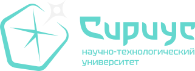

На iPhone или iPad: откройте сайт в Safari → «Поделиться» → «На экран Домой».
На Android и компьютере: откройте меню браузера → «Установить приложение» или «Добавить на главный экран». Если пункта нет, попробуйте Chrome или Edge.